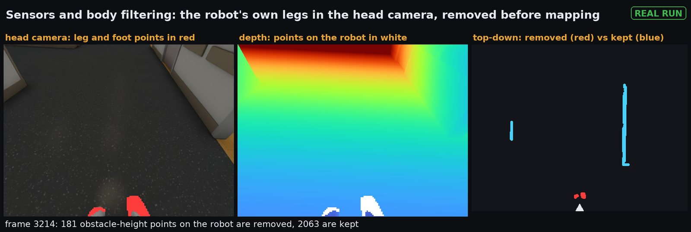

01Sensors and body filtering
A Unitree G1 humanoid robot is simulated in Isaac Lab [1]. A head RGB-D camera pitched down serves navigation and obstacle mapping, and an upper RGB-D camera above the eyes serves pose tracking, memory and detection. Joint encoders and a simulated IMU complete the sensor set. Because the head camera looks down steeply, it also sees the robot's legs and arms, which caused most false obstacle cells in the map. Before mapping, we therefore remove depth points that fall on the limbs, placed from the robot's joint state.
media slot: method-m01
method-media
method-media
render of a real run The head camera looks down steeply and sees the robot’s own legs; those depth points are removed before mapping.
